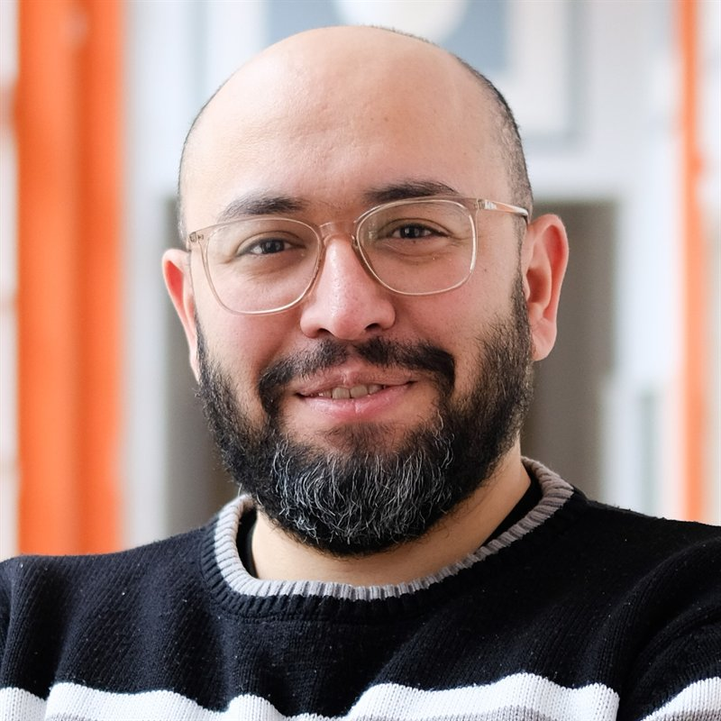

Computational Urban Design · Raumökonomische Forschung
Weimar, Deutschland · abdulmalik.abdulmawla@uni-weimar.de · abdulmalikabdulmawla.github.io ·
github.com/AbdulmalikAbdulmawla · ORCID 0000-0003-3383-5998

Raumökonomie-Forscher und Computational Urban Designer. Ich dekodiere urbane Rohdaten und parametrisiere die Methoden, um sie zu erkunden — GIS, Netzwerkanalyse, agentenbasierte Simulation und datengetriebene Werkzeuge (Python, R, C#) —, damit evidenzbasierte Entscheidungen und Entwürfe leichtfallen. Meine Forschung fragt, wo sich wirtschaftliches Handeln in der Stadt verorten kann und wie städtischer Raum offen bleibt für die kleinen Ökonomien, die Menschen von unten aufbauen.
Arbeitstitel: „Spatial dependency of urban retail: detailed methods for positioning street-level activities“ — Betreuer: Prof. Dr. Reinhard König
Thesis: „Heterogeneous-Atelier Industry“ (mit Ali Farhan) — Şişhanes informelle Atelier-Netzwerke in Istanbul kartiert und als eine Bottom-up-Fabrik simuliert
Bauhaus-Universität Weimar · Bauhaus Mobility / European Digital Innovation Hub Thüringen (EDIH.TH)
Erhebung und Analyse offener Mobilitätsdaten; interaktive Plattformen zur Datenexploration; Data-Science-Beratung öffentlicher Institutionen, inkl. Schulungen für Verwaltungen zu europäischen Standards für offene Mobilitätsdaten und zur Datenveröffentlichung auf der Mobilithek; Betreuung studentischer Arbeiten (Digital Transport Research Lab).
Bauhaus-Universität Weimar
Lehre rechnergestützter Methoden für Stadtplanung und -analyse; Entwicklung von Entwurfs- und Forschungswerkzeugen (DeCodingSpaces Toolbox, mineR); Betreuung von Masterarbeiten; Konferenzvorträge (Space Syntax Symposium, eCAADe) sowie Unterstützung wissenschaftlicher Publikationen.
Bauhaus-Universität Weimar ↔ German-Jordanian University, Amman
Verfassen des Projektantrags, Verwaltung der Finanzen, Organisation des Lehr- und Workshop-Programms.
DecodingSpaces GbR, Weimar
C#-Entwicklung für eine Grasshopper-Toolbox zur Stadtanalyse; Testing, Dokumentation, Beratung — u. a. ein interaktives Masterplan-Analysewerkzeug für das Entwicklungsgebiet Blankenburger Süden (Auftraggeber: TSPA, Berlin, 2019).
Arab Academy for Science, Technology & Maritime Transport (AASTMT), Kairo
Rechnergestütztes und parametrisches Entwerfen (Grasshopper, Processing, Arduino) in einem RIBA-Part-I-zertifizierten Programm.
Mansoura, Ägypten
Wohn-, Bildungs- und Wettbewerbsprojekte (u. a. Lusail Underpass Competition, Katar).
EAI Group, Abu Dhabi · Invert Studios, Kairo · Al Turath, Abu Dhabi
Frühe Architekturpraxis: Entwurf, CAD, 3D-Modellierung und Visualisierung, Bauherrenvertretung.
— Abdulmawla, A., Bielik, M., Schneider, S., & König, R. Mapping active frontages: a method for linking street-level activities to their surrounding urban forms — a case study of Weimar, Germany. 13th International Space Syntax Symposium (SSS13), Bergen.
— Abdulmawla, A., Schneider, S., König, R., Bielik, M., & Fuchkina, E. Parametric urban data structuring and spatial query. 40th eCAADe.
— Bielik, M., König, R., Fuchkina, E., Schneider, S., & Abdulmawla, A. Evolving configurational properties: simulating multiplier effects between land use and movement patterns. 12th International Space Syntax Symposium (SSS12).
— Abdulmawla, A., Schneider, S., Bielik, M., & König, R. Integrated data analysis for parametric design environments — mineR: a Grasshopper plugin based on R. 36th eCAADe.
— König, R., Bielik, M., Knecht, K., Abdulmawla, A., & Fuchkina, E. New methods for urban analysis and simulation with Grasshopper — the DeCodingSpaces-Toolbox. CAAD Futures 2017, Istanbul.
— Schneider, S., Abdulmawla, A., & Donath, D. The effect of the street network on movement patterns and land use in small cities. 11th International Space Syntax Symposium, Lissabon.
— Dennemark, M., Schneider, S., König, R., Abdulmawla, A., & Donath, D. Towards a modular design strategy for urban masterplanning. eCAADe 2017, Rom.
— Abdulmawla, A., & Farhan, A. Heterogeneous assemblages of atelier industries. SimAUD 2016, London [Poster].
Vollständige Liste: researchgate.net/profile/Abdulmalik-Abdulmawla
Universitätsseminare: Algorithmic Architecture · Parametric Urban Design & Analysis · SYNCITY I & II · Circular Urbanism · Digital Traffic Simulation Lab · Open Mobility Data · Rent-a-Data-Scientist.
Workshops (Organisator): Discovering Cities (GJU Amman, 2018) · Urban Analysis, Synthesis & Exploration with Grasshopper (eCAADe 2018, Łódź) · Rural-to-Urban Transformation (Emerging City Lab, Addis Abeba, 2016) · Simulating Agent-Based Systems using Processing (Kairo, 2015).
Programmierung: Python, C#, R, Grasshopper, Java/Processing, vvvv, Arduino
Modellierung & Medien: Rhino, AutoCAD, Revit, 3ds Max, Photoshop, Illustrator, InDesign
Räumlich & analytisch: GIS, Netzwerkanalyse, agentenbasierte Simulation, Space Syntax, räumliche Datenverarbeitung
Sprachen: Arabisch (Muttersprache) · Englisch (fließend) · Deutsch (sehr gut)
— Würdigung des zehnjährigen Dienstjubiläums an der Bauhaus-Universität Weimar, überreicht vom Universitätspräsidenten.
Abdulmalik Abdulmawla · Juli 2026 · https://abdulmalikabdulmawla.github.io